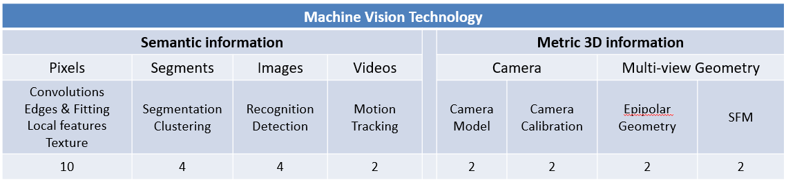

第一章 计算机视觉概述
学习路线

第二章 卷积与边缘提取
卷积
-
卷积定义：令f为图像， g为内核。 f与g卷积的输出表示为f * g 。
(𝑓∗𝑔)[𝑚,𝑛] = ∑(𝑘,𝑙)𝑓[𝑚−𝑘,𝑛−𝑙]𝑔[𝑘,𝑙]
约定：内核被“翻转” -
卷积性质
- 交换律： a * b = b * a 从概念上讲，滤波器和信号之间没有区别
- 结合律： a * ( b * c ) = ( a * b ) * c
- 通常依次应用多个过滤器： ((( a * b 1 ) * b 2 ) * b 3 )
- 这相当于应用一个过滤器： a * ( b 1 * b 2 * b 3 )
- 分布于加法： a * ( b + c ) = ( a * b ) + ( a * c )
- 标量因式分解： ka * b = a * kb = k ( a * b )
- 恒等式：单位滤波e = […, 0, 0, 1, 0, 0, …] , a * e = a
-
脉冲信号进行卷积则图像不变
- 平均信号造成图像平滑模糊
- 锐化操作即为原图像 * 2e - 原图像平均信号卷积操作
- 高斯滤波 卷积核内数值采用高斯分布，中间大两边小